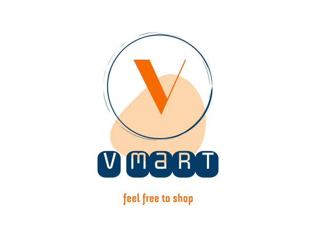

<mat-sidenav-container class="sidenav-container">
  <mat-sidenav #drawer class="sidenav" fixedInViewport="true"
    [attr.role]="(isHandset$ | async) ? 'dialog' : 'navigation'" [mode]="(isHandset$ | async) ? 'over' : 'side'"
    [opened]="!(isHandset$ | async)">
    <mat-toolbar>
      
    </mat-toolbar>
    <mat-nav-list>
      <a mat-list-item routerLink="/home/dashboard">
        <i class="material-icons">
          dashboard
        </i>
        DashBoard</a>
      <a mat-list-item routerLink="/home/products">
        <i class="material-icons">
          add_shopping_cart
        </i>
        Products</a>
      <a mat-list-item routerLink="/home/categories">
        <i class="material-icons">
          category
        </i>
        Categories</a>
      <a mat-list-item routerLink="/home/vendors">
        <i class="material-icons">
          assignment
        </i>
        Orders</a>
      <a mat-list-item routerLink="/home/orders">
        <i class="material-icons">
          person_outline
        </i>
        Vendors</a>
    </mat-nav-list>
  </mat-sidenav>
  <mat-sidenav-content>
    <mat-toolbar color="primary">
      <button type="button" aria-label="Toggle sidenav" mat-icon-button (click)="drawer.toggle()"
        *ngIf="isHandset$ | async">
        <mat-icon aria-label="Side nav toggle icon">menu</mat-icon>
      </button>
    </mat-toolbar>
        <div class="user-block">
          <div class="icon-block">
            <i class="material-icons" matBadge="15" matBadgeColor="warn">
                notifications
            </i>
          </div>
          <div class="btn-block">
            <button [matMenuTriggerFor]="appMenu">
              <i class="material-icons">
                account_circle
              </i>
              <span>Admin</span>
            </button>
          </div>
        </div>
    <mat-menu #appMenu="matMenu">
      <span class="arrow"></span>
      <ng-template matMenuContent let-name="name">
        <button mat-menu-item>Settings</button>
        <button mat-menu-item (click)="logoutUser()">Log out</button>
      </ng-template>
    </mat-menu>
    <router-outlet></router-outlet>
  </mat-sidenav-content>
</mat-sidenav-container>